Visible cash flows, a flexible capital base, and embedded large-load optionality make the earnings path easier to underwrite across more macro outcomes.
Comparative equity research · Preliminary initiation underwrite
Two kinds of scarcity
Vista converts resource scarcity in Vaca Muerta into export-linked cash. Vistra converts power scarcity in critical U.S. markets into hedged generation, retail margin, and contracted load. The stocks are not peers; they are two different ways to underwrite constrained energy systems.
Operating leverage and a low entry multiple create more torque, but oil, policy, infrastructure, capex, and leverage can move together.
From scarce asset to common equity
The diagrams combine operating logistics with the capital claims that sit between physical output and shareholder cash.
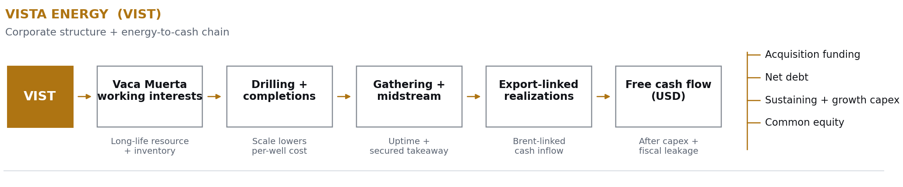
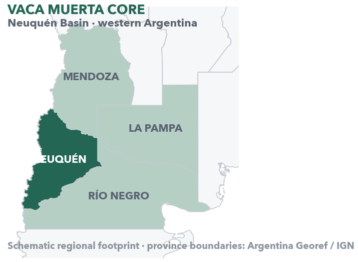
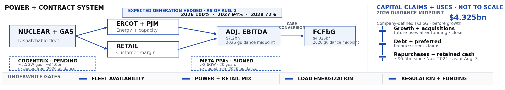
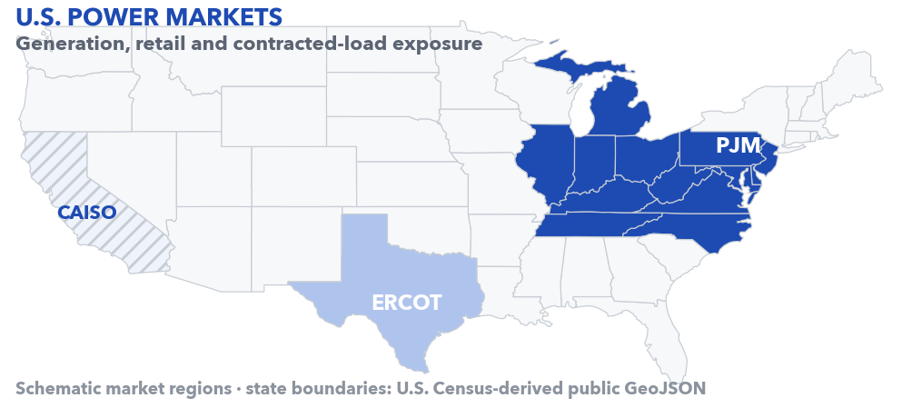
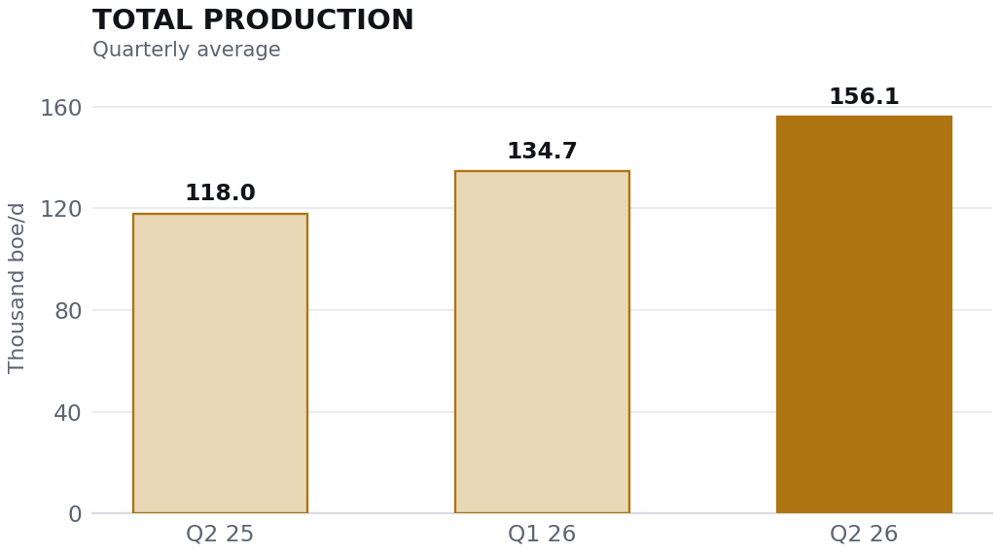
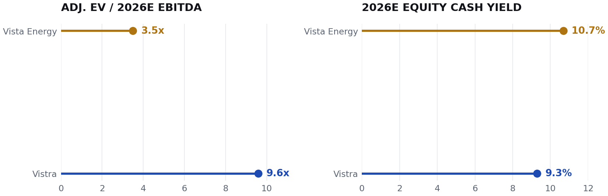
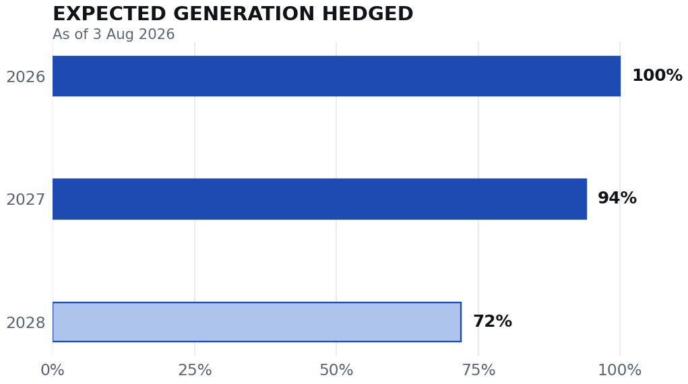
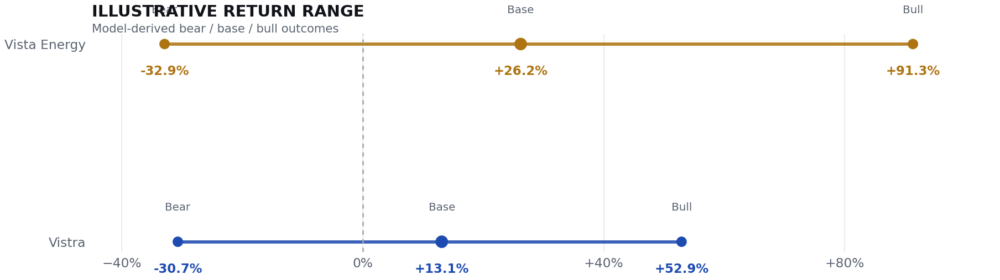
Company-reportedOperating results, production, hedge positions, capital allocation, balance sheet.
Analyst-modeledAdjusted enterprise values, cash yields, sensitivity ranges, and forward scenarios.
UnresolvedPolicy timing, infrastructure execution, commodity prices, and large-load contracting pace.
Investment view
The cleaner underwrite is not the cheaper stock.
Vista offers more rerating torque; Vistra offers the narrower path to disappointment. The choice is proof of cash conversion, not a superficial multiple comparison.
- Relative view
- Vistra preferred
- Confidence
- High / medium
- Status
- Watchlist-ready
| Decision test | Vista Energy · VIST | Vistra · VST | Relative conclusion |
|---|---|---|---|
| Case | Wider rerating range. Production growth, $4.50/boe lifting cost, and a 3.5x adjusted 2026E EV / EBITDA entry multiple create torque. | Risk-adjusted preference. Hedging, retail, nuclear, and contracted-load options make the earnings path more visible. | Pay more for the business with fewer simultaneous failure modes. |
| Must prove | Post-acquisition free cash flow compounds while infrastructure access holds and leverage trends toward the 1.0x objective.1 | Scarce generation becomes durable contracted cash without Cogentrix or growth funding crowding out returns.8 | Financing discipline is the shared gate. |
| Breaks | Oil, Argentina policy, takeaway, capex, and leverage move against equity together. | Load delays, outages, regulation, or weak acquisition returns erode the cash framework. | Vista has the larger upside and the wider failure surface. |
Exposure comparison
Different assets. Different ways to be wrong.
The operating risks barely overlap. Capital funding is the one dependency both equities share.
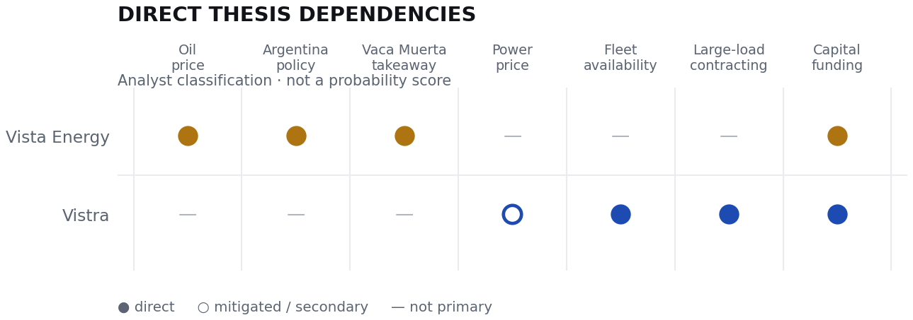
| Dimension | Vista | Vistra |
|---|---|---|
| Core exposure | Vaca Muerta oil, Argentina policy, global crude. | U.S. generation, retail, nuclear, gas, large-load demand. |
| Growth engine | Inventory, drilling pace, working interests, takeaway. | Realizations, capacity, PPAs, acquisitions, buybacks. |
| Cash visibility | Moderate: oil-linked revenue and high organic capex. | High near term: about 100% of 2026 and 94% of 2027 generation hedged.4 |
Comparative economics
Two operating models, aligned on one research spread.
Reported performance, forward framework, capital conversion, and falsifiers sit on common rows so the comparison can be scanned without losing the underlying evidence.
VIST · Vista Energy
Speculative positiveHigh-growth barrels at a country and commodity discount.
Strong operating evidence and a low entry multiple; less complete proof that acquisition-funded growth converts into equity cash.
- Price
- $68.37
- Q2 output
- 156.1k
- Lifting cost
- $4.50
- 2026E EV / EBITDA
- 3.5x
VST · Vistra
PreferredScarce power assets with a contracted-cash option.
A higher multiple buys near-term cash visibility plus several routes to monetize dispatchable generation.
- Price
- $139.02
- 2026E EBITDA
- $7.2bn
- 2026 hedged
- 100%
- 2026E EV / EBITDA
- 9.6x
Market expectations · secondary evidence
Quarterly delivery versus consensus.
Five reported quarters, using one consistent vendor history. Toggle between earnings and revenue without adding another dashboard layer.
Consensus
Reported
VIST · Vista Energy
Result delivery
Latest · Q2 2026
$2.38 reported / $3.15 consensus
$1.23bn reported / $1.19bn consensus


EPS surprise is shown in dollars; revenue surprise in percent. Vendor-defined historical figures.11
VST · Vistra
Result delivery
Latest · Q2 2026
$0.76 reported / $1.61 consensus
$4.02bn reported / $5.46bn consensus


EPS surprise is shown in dollars; revenue surprise in percent. Vendor-defined historical figures.12
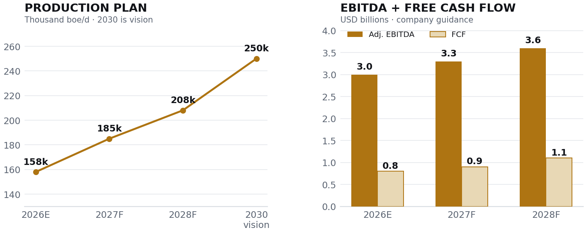
Vista updated guidance and 2030 vision.2
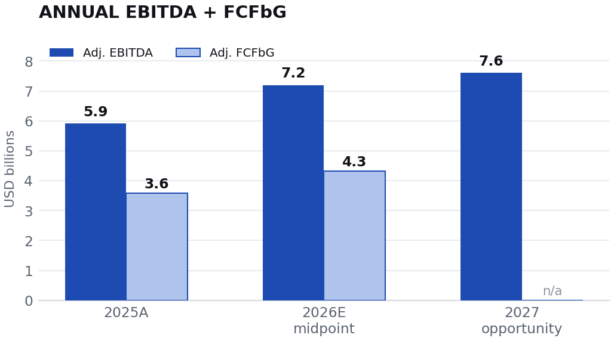
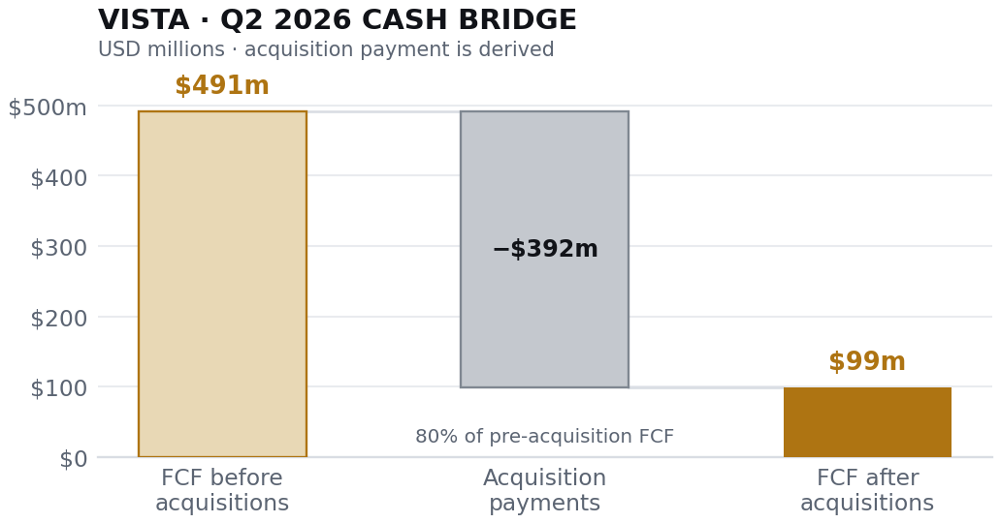
Reported / derived from Vista Q2 2026 results.1
The assets are scarce. The timing is not guaranteed.
Contracted load: 20-year Meta PPAs cover more than 2,600 MW from three PJM nuclear plants, including 433 MW of planned uprates; AWS agreements are tied to Comanche Peak.7
Acquisition: Cogentrix adds about 5,500 MW of gas generation for an announced net purchase price of roughly $4.0bn. The risk is paying today for load that arrives later.8
Vista What works / what breaks
- Resource scale and $4.50/boe field-cost cushion.
- Visible plan to 208k boe/d and $1.1bn FCF in 2028.
- Low multiple creates rerating asymmetry.
- Lower oil or policy reversal compresses captured value.
- $1.8–$1.9bn annual capex magnifies execution risk.
- Acquisition payments and leverage delay equity cash.
Vistra What works / what breaks
- Hedging and retail support near-term visibility.
- Nuclear and gas assets monetize scarcity and load growth.
- Repurchases provide a proven capital-return channel.
- Load projects can be delayed or grid-constrained.
- Debt, preferred capital, and acquisitions lever equity.
- Regulation or outages can reallocate scarcity value.
Full company evidence modulesExpanded automatically in print
VIST · Vista Energy
Speculative positive
High-growth barrels at a country and commodity discount.
Vista's stock thesis is the gap between a company plan built on production and free-cash-flow compounding and a valuation that still discounts oil, Argentina, capex, and execution risk. The operating evidence is strong; the cash proof after acquisition funding is less complete.
$68.37Latest trade at cut-off
156.1kQ2 2026 boe/d
$4.50Q2 lifting cost / boe
3.5xAdjusted EV / 2026E EBITDA
Source: Vista Q2 2026 results.1
Accessible data
| Quarter | Thousand boe/d |
|---|---|
| Q2 2025 | 118.018 |
| Q1 2026 | 134.741 |
| Q2 2026 | 156.061 |
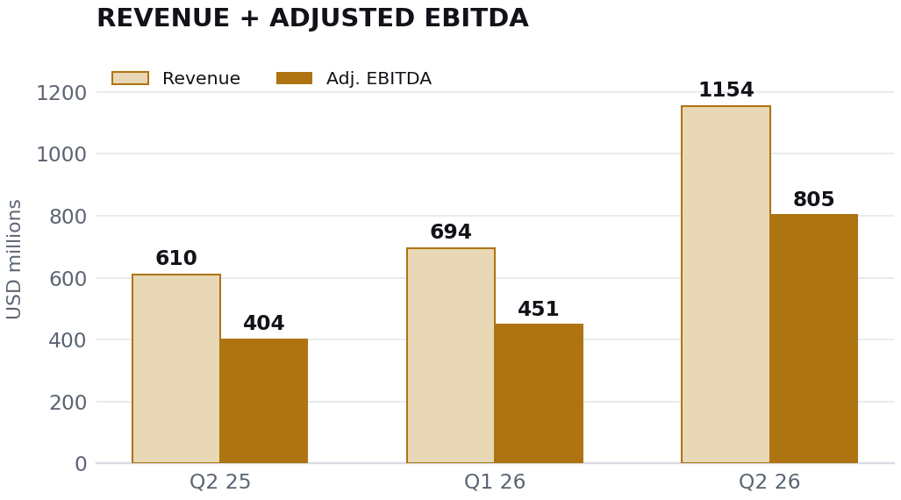
Source: Vista Q2 2026 results.1
Accessible data
| Quarter | Revenue, $m | Adjusted EBITDA, $m |
|---|---|---|
| Q2 2025 | 610.5 | 404.5 |
| Q1 2026 | 694.3 | 451.0 |
| Q2 2026 | 1,154.4 | 805.2 |
Production
158k
2026E
185k
2027F
208k
2028F
250k
2030 vision
Adj. EBITDA
$3.0bn
2026E
$3.3bn
2027F
$3.6bn
2028F
—2030
Free cash flow
$0.8bn
2026E
$0.9bn
2027F
$1.1bn
2028F
—2030
Source: Vista updated 2026–2028 guidance and 2030 vision.2
Why the thesis can work
- Resource scale: Q2 production reached 156.1k boe/d, with oil representing most output and revenue.
- Field-cost cushion: lifting cost of $4.50/boe supports margins, though it is not a full-cycle breakeven.
- Visible company plan: Vista targets 208k boe/d, $3.6bn of adjusted EBITDA, and $1.1bn of free cash flow by 2028.2
- Multiple asymmetry: about 3.5x adjusted EV / 2026E EBITDA leaves room for rerating if delivery and policy stability persist.
What breaks it
- Oil compression: the published plan assumes a materially stronger oil deck than a severe downside case.
- Argentina policy: export rules, taxes, FX convertibility, and capital controls can change the value shareholders capture.
- Capital intensity: annual capex around $1.8–$1.9bn means execution slippage can absorb cash quickly.2
- Acquisition and leverage: Q2 free cash flow was only $99m after acquisition payments, versus $491m before them.1
VST · Vistra
Risk-adjusted preference
Scarce power assets with a contracted-cash option.
Vistra's higher multiple buys a more visible near-term cash framework and several ways to monetize scarce dispatchable generation. The strategic logic is coherent; the underwrite still depends on load timing, operating reliability, regulation, and capital allocation.
$139.02Latest trade at cut-off
$7.2bn2026E EBITDA midpoint
100%2026 expected generation hedged
9.6xAdjusted EV / 2026E EBITDA
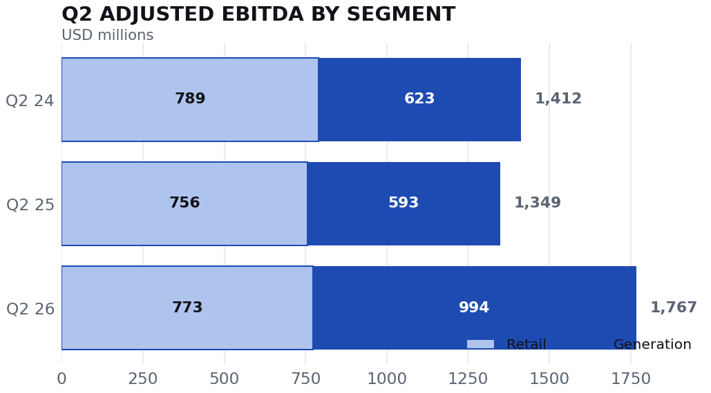
Source: Vistra Q2 2026 results presentation.5
2026
100%
2027
94%
2028
72%
Source: Vistra Q2 2026 results.4
Large-load and portfolio optionality
The assets are scarce. The timing is not guaranteed.
Vistra signed 20-year Meta PPAs for more than 2,600 MW from three PJM nuclear plants, including 433 MW of planned uprates. It also disclosed nuclear agreements with AWS tied to Comanche Peak.7
The pending Cogentrix portfolio adds about 5,500 MW of gas generation at an announced net purchase price of roughly $4.0bn. The strategic logic is dependable capacity in markets where interconnection, turbines, and new-build timelines are scarce. The risk is paying today for load that arrives later—or for regulation to reallocate more system cost.8
Why the thesis can work
- Visible cash flow: 2026 and most 2027 generation volumes are hedged, supporting the current earnings framework.
- Scarce assets: nuclear and efficient gas generation can supply dependable power while new-build timelines remain long.
- Retail hedge: the customer business diversifies generation earnings and can benefit when supply costs are managed well.
- Capital return: Vistra had repurchased about $6.5bn since November 2021 and retained about $1.2bn of authorization as of August 3.4
What breaks it
- Load timing: data-center projects can be delayed, downsized, or stranded by grid constraints.
- Capital stack: debt, preferred stock, and acquisition funding make equity value more levered than common market capitalization implies.
- Regulation: power affordability and who pays for new infrastructure can become politically contentious.
- Operations: unplanned nuclear or gas outages can be costly during high-price periods.
Valuation frame
Vista is cheaper. Vistra is more financeable.
The headline multiple gap is real but incomplete. Vista's equity needs a lower multiple to work; Vistra's cash framework is more visible, yet debt, preferred capital, acquisition funding, and growth investment sit between reported FCFbG and distributable cash.
Vista valuation bridge
USD · 25 AUG 2026- Latest price
- $68.37
- Q2 weighted-average shares
- 108.9m
- Diluted-equivalent equity value
- $7.45bn
- Net debt
- $3.06bn
- Adjusted enterprise value
- $10.51bn
- EV / pro forma LTM EBITDA
- 4.3x
- EV / 2026E EBITDA
- 3.5x
The market-data feed reports a $6.64bn market cap, below the $7.45bn equity value implied by the company share count. This report uses the company count for a conservative, internally consistent bridge.
Vistra valuation bridge
USD · 25 AUG 2026- Latest price
- $139.02
- June 30 common shares
- 336.0m
- Common equity value
- $46.71bn
- Debt and financing items
- $20.51bn
- Preferred stock
- $2.48bn
- Cash
- ($0.43bn)
- Adjusted enterprise value
- $69.27bn
- EV / 2026E EBITDA
- 9.6x
- Equity / 2026E FCFbG
- 10.8x
The bridge intentionally includes preferred stock and selected financing obligations to avoid understating the capital supporting the assets.
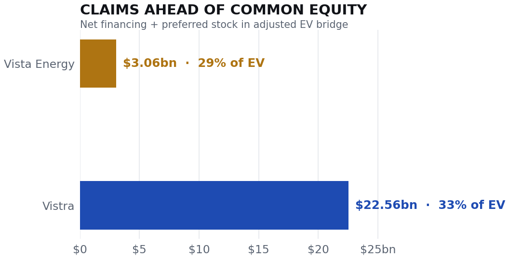
Supporting entry-term and scenario viewsAlready summarized in the overview
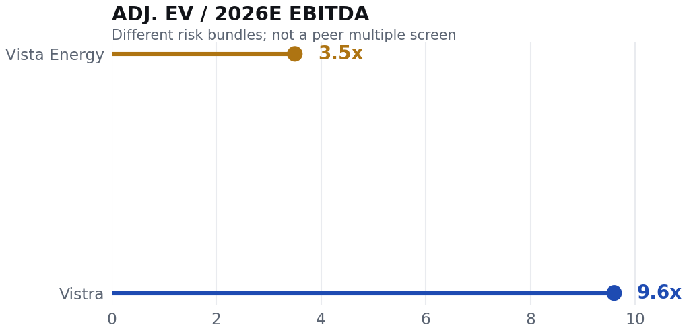
Vista Energy
3.5x
Vistra
9.6x
Adjusted enterprise values use the company share-count bridges above and the capital items described in methodology.
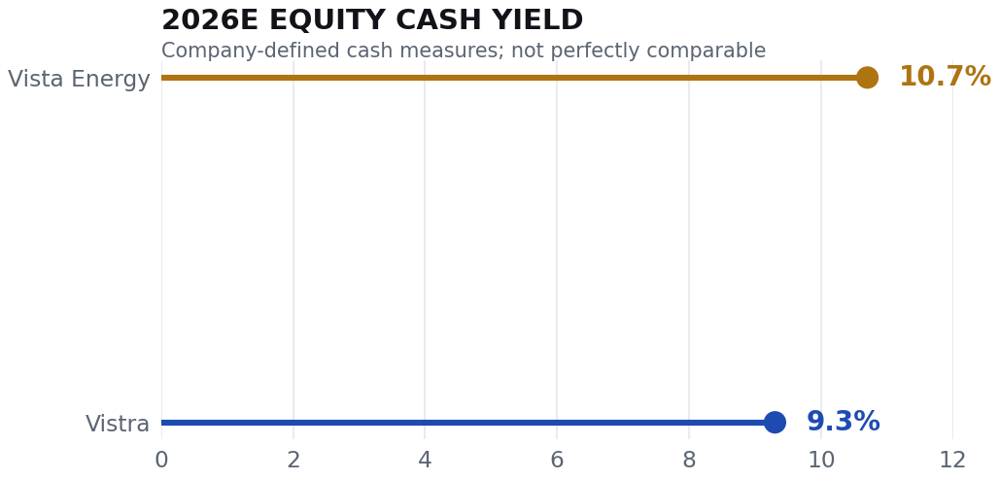
Vista Energy
10.7%
Vistra
9.3%
Growth investment and acquisition funding can reduce distributable cash below the displayed company-defined measures.
Illustrative return from current price
Bear / base / bull values use company operating frameworks with analyst-selected multiples and balance-sheet assumptions.
Vista Energy$68.37 current
Bear−32.9%
Base+26.2%
Bull+91.3%
Vistra$139.02 current
Bear−30.7%
Base+13.1%
Bull+52.9%
Vista scenario values: $45.9 / $86.3 / $130.8. Vistra scenario values: $96.4 / $157.2 / $212.5. Scenarios are analyst assumptions, not company guidance or personalized recommendations.
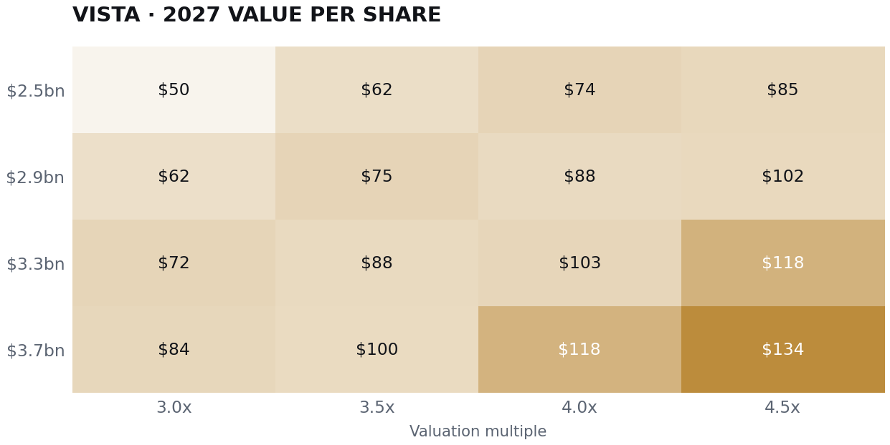
EBITDA ↓3.0x3.5x4.0x4.5x
$2.5bn$50.5$62.0$73.5$84.9
$2.9bn$61.5$74.8$88.1$101.5
$3.3bn$72.5$87.7$102.8$118.0
$3.7bn$83.6$100.5$117.5$134.5
The matrix isolates EBITDA and multiple. It does not separately model oil, taxes, working capital, or share count.
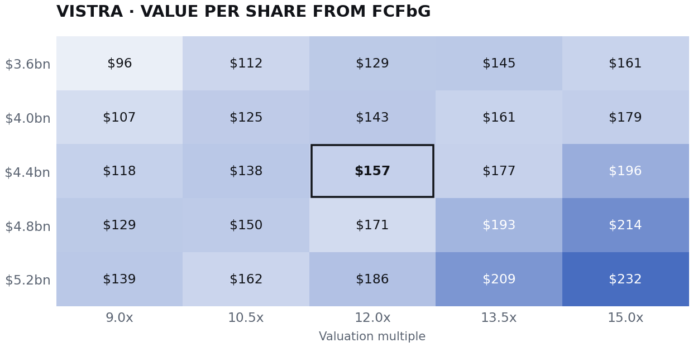
FCFbG ↓9.0x10.5x12.0x13.5x15.0x
$3.6bn$96.4$112.5$128.6$144.7$160.7
$4.0bn$107.2$125.0$142.9$160.7$178.6
$4.4bn$117.9$137.5$157.2$176.8$196.5
$4.8bn$128.6$150.0$171.4$192.9$214.3
$5.2bn$139.3$162.5$185.7$209.0$232.2
The outlined cell is the base framework. FCFbG is before growth; acquisition and growth funding can reduce distributable cash.
Monitoring framework
The thesis earns its way forward—or gets killed.
These are the observable proof points. They matter more than repeating a static rating after the operating and financing facts change.
| Company | KPI or event | Constructive evidence | Disconfirming evidence |
|---|---|---|---|
| Vista | Production and tie-ins | Quarterly production remains on a credible path toward 158k boe/d in 2026 and 185k in 2027. | Repeated misses, slower tie-ins, or weaker-than-planned well productivity. |
| Vista | Costs and free cash flow | Lifting cost stays controlled and free cash flow grows after acquisition payments normalize. | Capex rises faster than production or free cash flow stays weak despite high realized prices. |
| Vista | Leverage | Net leverage approaches management's 1.0x year-end 2026 objective. | Net leverage remains above roughly 1.5x without a clearly temporary explanation. |
| Vista | Policy and exports | Export access, repatriation, and market-oriented policy continue. | New capital controls, export intervention, or heavier fiscal extraction. |
| Vistra | 2026 guidance | EBITDA remains inside $6.8–$7.6bn with cash conversion near the framework. | A miss caused by operating or retail weakness rather than timing. |
| Vistra | Large-load contracts | Meta, AWS, and Helix projects progress toward firm energization and contracted economics. | Material delays, cancellations, or regulatory restrictions. |
| Vistra | Cogentrix integration | Closing and integration preserve the announced return and leverage framework. | Cost overruns, delayed synergies, or weak acquired-asset performance. |
| Vistra | Capital allocation | Buybacks continue without compromising investment-grade balance-sheet goals. | Growth spending crowds out repurchases while leverage remains elevated. |
Evidence and methods
What is known, modeled, and still missing.
Full methodology, evidence posture, and the twelve-source register remain attached to the report and expand automatically for print.
Methodology, limitations, and source register13 evidence notes · 12 sources
Methodology and limitations
- Research status: preliminary comparative initiation. A limited third-party history of quarterly EPS and revenue consensus was added; no transcript archive, full forward consensus dataset, estimate-revision history, or three-statement model was available.
- Market prices: latest trades near the August 25 close, not a guaranteed official closing-price record. Market-sensitive values can change after the cut-off.
- Vista equity value: current price multiplied by Q2 weighted-average ordinary shares because the third-party market-cap feed conflicts with the company-reported count.
- Vistra adjusted EV: common equity plus long-term debt, receivables financing, forward repurchase obligation, and preferred stock, less cash. It may differ from vendor EV.
- Non-GAAP measures: adjusted EBITDA, Vista FCF, and Vistra FCFbG follow company definitions. FCFbG is before growth and differs from conventional free cash flow.
- Scenarios: analyst assumptions. They omit tax, FX, timing, dilution, buyback, acquisition-closing, and path-dependency effects except where noted.
- Consensus delivery charts: secondary vendor history. EPS definitions are vendor-specific and are not reconciled to company adjusted EBITDA or other non-GAAP measures.
Evidence posture
- High confidence: company-reported historical operating figures, published guidance, hedge coverage, transaction terms, and capital-return disclosures.
- Medium confidence: analyst-normalized enterprise-value bridges and the secondary quarterly consensus history, because financing and EPS classifications can differ from vendor conventions.
- Medium-low confidence: valuation scenarios, which intentionally isolate selected drivers and are not supported by a complete operating model.
- Unresolved conflict: Vista market capitalization from the finance feed is below the equity value implied by the Q2 weighted-average share count.
- Missing required context: a full forward consensus surface, estimate revisions, ownership, short interest, factor exposure, and a full cash-flow bridge for funded growth.
- Underwriting implication: the evidence supports a relative research preference and watchlist posture—not a personalized investment recommendation or publication-ready target price.
Source register
Accessed 25–26 AUG 2026- 01Vista Energy · Q2 2026 results
SEC-filed exhibit. Production, realized pricing, adjusted EBITDA, free cash flow, debt, leverage, and acquisition-payment detail. Published July 16, 2026.
- 02Vista Energy · Updated 2026–2028 guidance and 2030 vision
Production, capex, revenue, adjusted EBITDA, free cash flow, and oil-price assumptions. Company guidance and strategic vision.
- 03Vista Energy · Investor relations
Company filings and presentations used as the issuer document index.
- 04Vistra · Q2 2026 results
Adjusted EBITDA, guidance, hedge coverage, repurchases, share count, and liquidity. Published August 7, 2026.
- 05Vistra · Q2 2026 results presentation
Segment bridge, 2027 opportunity, capital allocation, fleet, and market framing.
- 06Vistra · Q2 2026 Form 10-Q
Debt, cash, preferred stock, common shares, and financing obligations. Filed August 10, 2026.
- 07Vistra and Meta · Nuclear PPAs
Twenty-year agreements for more than 2,600 MW, including 433 MW of planned uprates. Published January 9, 2026.
- 08Vistra · Cogentrix acquisition
Approximately 5,500 MW of gas generation and announced transaction economics, including the roughly $4.0bn net purchase price. Published January 5, 2026.
- 09Vistra · Full-year 2025 results
Historical adjusted EBITDA, adjusted FCFbG, and AWS agreement context. Published February 26, 2026.
- 10Market data · OpenAI finance feed
Retrieved August 25, 2026 near 4:02 p.m. ET. VIST $68.365 and reported market cap $6.64bn; VST $139.02 and reported market cap $47.16bn. No durable source URL was exposed.
- 11MarketBeat · Vista earnings history
Quarterly analyst EPS and revenue consensus versus reported results. MarketBeat attributes the underlying earnings data to Fiscal.ai. Retrieved August 26, 2026.
- 12MarketBeat · Vistra earnings history
Quarterly analyst EPS and revenue consensus versus reported results. MarketBeat attributes the underlying earnings data to Fiscal.ai. Retrieved August 26, 2026.
This research report is for informational and analytical purposes. It is not personalized investment advice, an offer, or a solicitation. The relative view, valuation bridges, and scenarios require human review before any investment, compliance, or publication use.